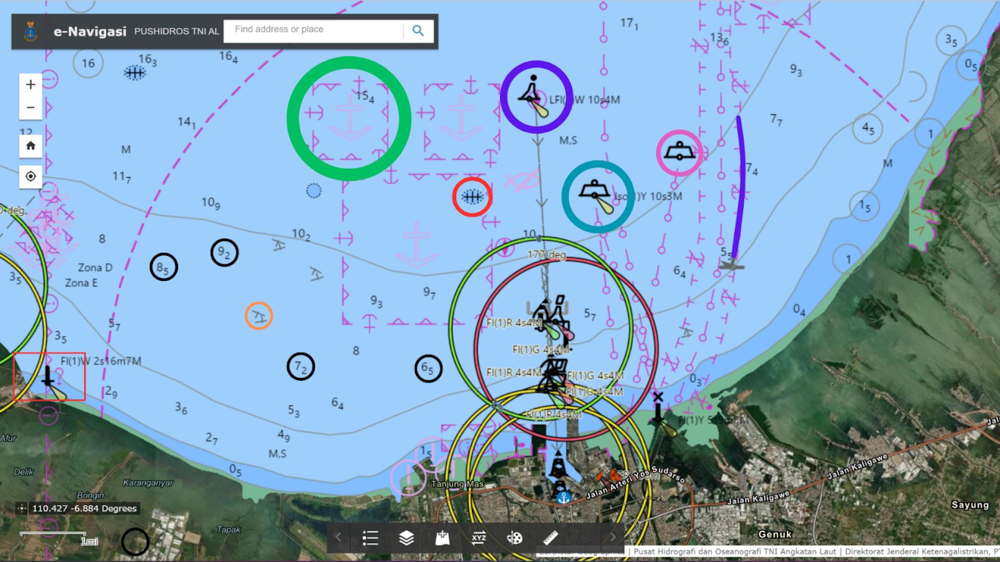
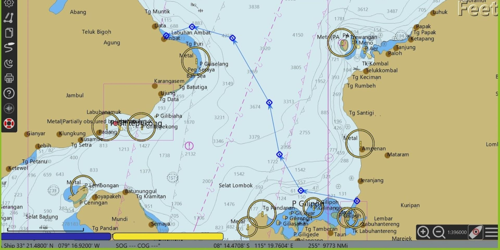

Eksplorasi dan Analisis Pelabuhan Tanjungemas, Semarang Berdasarkan Peta Electronic Navigational Chart (ENC)
Latar belakang
Peta laut berfungsi sebagai alat navigasi pelayaran sekaligus acuan perencanaan, pembangunan, dan pemeliharaan wilayah laut. Isinya mencakup kedalaman dan fisiografi dasar laut, bentuk pantai, informasi keselamatan navigasi, serta fitur-fitur di laut, dan harus mengikuti standar IHO S-44 dan SNI 7469:2010. Kini peta laut tersedia dalam bentuk digital, yaitu Electronic Navigational Chart (ENC) yang ditampilkan melalui sistem ECDIS dan mengikuti standar transfer data S-57.
Agar ENC bisa dipakai untuk pelayaran yang aman, informasi di dalamnya harus dapat dibaca dan dipahami dengan benar oleh penggunanya. Karena itu, penelitian ini mempelajari isi ENC Pelabuhan Tanjungemas, satu-satunya pelabuhan di Kota Semarang yang menjadi pusat bongkar muat, penyimpanan barang, dan logistik regional maupun internasional. Pemahaman tersebut kemudian diterapkan pada studi kasus perencanaan rute pelayaran yang aman dari Lombok ke Bali.
Data yang digunakan
| Data | Format Data | Jenis Data | Sumber |
|---|---|---|---|
| Peta laut digital (ENC) Pelabuhan Tanjungemas | Citra tangkapan layar (raster) | Sekunder | e-Navigasi Pushidrosal TNI AL |
| Peta laut digital Selat Lombok dan Bali untuk rute pelayaran | ENC (S-57) | Sekunder | OPENCPN |
| Arti simbol peta laut | Dokumen | Sekunder | Buku Simbol dan Singkatan Peta Laut |
Metode
Pada tahap analisis ENC, lokasi pelabuhan dipilih di laman e-Navigasi Pushidrosal TNI AL, lalu tampilan petanya diambil sebagai tangkapan layar. Simbol dan informasi pada peta, seperti area kedalaman, batas navigasi, dan rintangan, dibaca dengan merujuk pada buku Simbol dan Singkatan Peta Laut.
Pada studi kasus, rute pelayaran dari Dermaga Muncit di Lombok menuju Labuhan Amat di Bali direncanakan dengan perangkat lunak OpenCPN. Prosesnya terdiri dari tiga langkah: menentukan titik berangkat dan titik labuh, menetapkan titik-titik pindah haluan (way point) untuk menghindari area berbahaya, kedalaman ekstrem, dan rintangan navigasi, lalu menentukan waktu pemberangkatan. Waktu yang dipilih adalah bulan Juni agar arah pelayaran searah dengan angin musiman yang bertiup antara April hingga Oktober.
Hasil
Kedalaman laut di sekitar Pelabuhan Tanjungemas berkisar sekitar 5 sampai 10 meter. Peta menampilkan beberapa simbol penting bagi navigator, yang dirangkum pada tabel berikut.

| Simbol | Fungsi |
|---|---|
| Area lego jangkar (Lingkaran hijau) | Lokasi khusus bagi kapal untuk menjatuhkan atau mengangkat jangkar, biasanya untuk kapal yang menunggu giliran sandar |
| Angka kedalaman (Lingkaran hitam) | Informasi kedalaman air agar kapal tidak menyentuh dasar laut yang dangkal |
| Pancang tenggeran (Lingkaran jingga) | Penanda navigasi atau pembatas jalur pelayaran |
| Tanda bahaya terpencil (Lingkaran ungu) | Penanda bahaya yang berdiri di atas tempat berbahaya yang masih dapat dilayari sekitarnya |
| Kerangka berbahaya (Lingkaran merah) | Penanda potensi bahaya dengan kedalaman yang tidak diketahui |
| Pelampung (Lingkaran biru) | Penanda pelampung instalasi minyak atau gas |
| Lingkaran pink | Penanda pelampung pengepil |
| Persegi merah | Penanda mercusuar |
| Garis ungu | Penanda simbol area lego jangkar |
Pada studi kasus, rute Lombok–Bali disusun dengan tujuh way point dan melewati beberapa kali pindah haluan untuk menghindari kerangka berbahaya, area berbahaya, bangkai kapal, dan karang. Rute juga diarahkan menjauhi perairan dengan kedalaman ekstrem. Perpindahan haluan terbesar terjadi pada way point 004 untuk menghindari area berbahaya, dan way point 007 menjadi titik akhir dengan jarak terpendek dari titik sebelumnya.

| Way Point | Latitude | Longitude | Course | Jarak |
|---|---|---|---|---|
| 001 | 08° 41,6' S | 116° 03,8' E | – | – |
| 002 | 08° 40,2' S | 115° 56,3' E | 280 °T | 7,60 NMi |
| 003 | 08° 35,4' S | 115° 53,5' E | 331 °T | 5,49 NMi |
| 004 | 08° 28,6' S | 115° 52,2' E | 349 °T | 6,96 NMi |
| 005 | 08° 20,1' S | 115° 47,2' E | 330 °T | 9,84 NMi |
| 006 | 08° 18,6' S | 115° 41,8' E | 285 °T | 5,54 NMi |
| 007 | 08° 19,8' S | 115° 38,4' E | 251 °T | 3,59 NMi |
Kesimpulan
ENC memberikan gambaran yang jelas tentang struktur perairan, fasilitas pelabuhan, dan rute navigasi yang aman, meskipun membaca simbol-simbolnya memerlukan keahlian. Pada studi kasus, ENC memudahkan penentuan way point untuk menghindari area berbahaya dan memilih jalur yang optimal sehingga pelayaran lebih aman dan efisien. Karena datanya terus diperbarui sesuai kondisi lapangan, ENC bukan sekadar kebutuhan, tetapi alat penting bagi keselamatan pelayaran dan efisiensi operasional kapal.
← View other projects